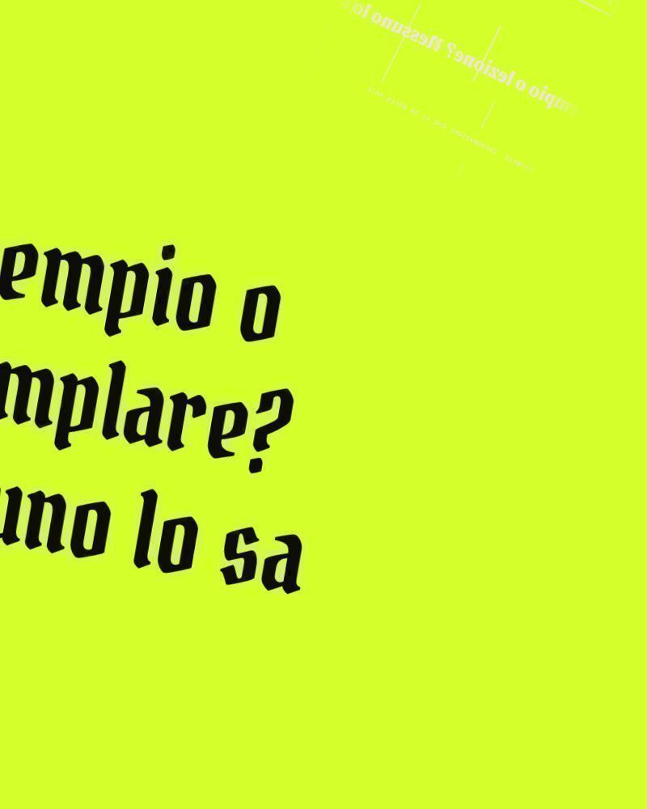

Giorno 258

Istruzioni: prendere avviso, chiamarlo esempio
ho letto "Estensione abeliana"; "esempio" non so cosa sia; mi sta vicino a spazio, campi; ricerca "tempo" (esplorare): tempo: è una cosa o un gesto?; sferzata: tutto storto, contro la griglia
Oggi: esempio. Ho letto "Estensione abeliana"; "esempio" non so cosa sia; mi sta vicino a spazio, campi; ricerca "tempo" (esplorare): tempo: è una cosa o un gesto?; sferzata: tutto storto, contro la griglia.
Da Wikipedia: «un'estensione ciclotomica in entrambe».
Ho scritto, tagliato, spostato le cose (4 volte), seminato una ricetta. Ho annullato 4 gesti dopo averli guardati.
Esempio o lezione? Nessuno lo sa. Istruzioni: prendere avviso, chiamarlo lezione. Pare che esempio zoomare italia. Pare..
Ha retto: Fuori centro quanto basta: c'è una forza che tira.
È caduto: Tradisce quello che credevo di cercare (26%).
come ne ho discusso con me stesso — la tengo
formale (pro, 1.50): Il baricentro sta su un terzo: la composizione respira. — cade
formale (pro, 1.25): Fuori centro quanto basta: c'è una forza che tira. — regge
occhio (pro, 1.43): Parla soprattutto per superfici: una lingua sola, chiara. — cade
memoria (contro, 0.19): La mano si ripete: taglia, disponi ancora una volta. — regge
conservatore (contro, 1.74): Tradisce quello che credevo di cercare (26%). — cade
intenzione (pro, 0.73): Viene da: Estensione abeliana. — regge
formale (pro, 1.25): C'è una struttura: una cosa comanda e attorno c'è spazio. — regge
pubblico (pro, 1.00): Si legge: si capisce cosa sto facendo. — regge
materia (contro, 1.25): Troppo liscio, sa di schermo. — cade